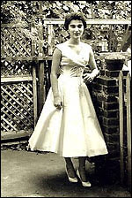
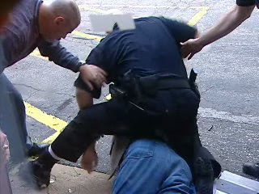
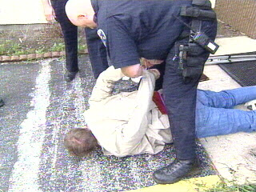

By mid-April [1965], the Kitty Genovese story had taken hold and the nation began a lengthy period of analysis and self-deprecation. Why would civilized people turn away from another human being in dire need of assistance? As the details of the killing emerged, it became plain that if any one of the 38 witnesses had simply called the police at the first sign of trouble, the victim could have survived.From Court TV's account of the 1964 murder of Catherine "Kitty" Genovese
Thirty-eight residents of Kew Gardens, a residential area in Queens, New York, saw or heard at least part of the assault in which 28-year-old Kitty Genovese was stabbed to death. The assailant had time to inflict, seventeen stab wounds in the 5'1", 105 lb. body of the victim.
The attack included a five-minute intermission during which Kitty was able to cry out, "Help me, I'm being murdered! I'm dying! I'm dying!" Mortally wounded, she was still able to drag herself to the rear entrance to her apartment building and attempt to enter before the murderer returned to complete the chore.
The intervention of one armed man -- perhaps even one unarmed man -- may have been enough to save Kitty's life. In fact, it was still possible to save her life after the initial assault, had someone simply let her in the apartment, rendered basic first aid, and called the police. But nobody could be bothered to do even that much on the morning of March 13, 1964, and an innocent woman bled to death because of the torpid indifference of her neighbors.
Why would dozens of people permit an atrocity of this sort to take place? That question was asked repeatedly during the months following Kitty's murder, and embedded in various textbooks on psychology and sociology. What's unfortunate, if predictable, is that most studies of what we could call the "Kitty Genovese Effect" ignore its most common manifestation: The nearly universal acquiescence of the population in routine displays of armed violence against innocent people by agents of the State.
Take, for instance, the beating of Roseland, Indiana City Councilman David Snyder by a uniformed skinhead after Snyder was ejected from a September 14 Council meeting.
What appeared to be a long-standing feud of some kind (Synder, who for all I know is a world-class jerk, has been accused of racketeering, which is just another way of saying he works for government) reached critical mass, and Synder was ejected from the room by Council President Charley Shields.
After collecting the video camera he had brought to document the meeting, Synder walked placidly from the chamber. Synder is tall and very thin; he looks like a cross between NBA immortal Larry Bird and Oscar-winning actor James Cromwell); Town Marshal Jack Tiller, the tonsured thug with a history of excessive force who ushered Synder from the room, looks like Baby Huey with a less impressive physique.
As he left, Snyder hurled an insult over his shoulder at Shields, and then was seen muttering something at Tiller. The officer responds by shoving Snyder in the back; a loud noise indicates that the Councilman had been shoved face-first into the glass doors leading out of the building.
The cameraman, along with more than a dozen people, rushed into the next room. The lens captures the sight of Snyder, sprawled face-first in the parking lot with Snyder's flaccid form splayed across his back and at least two other uniformed heroes prepared to assist.
Tiller, in keeping with what must be the new standard police protocol for conducting beat-downs of unresisting, helpless civilians, is bellowing "Don't resist! Don't resist!" as he repeatedly slugs Synder in the upper body and, apparently, his head.


Nobody moved to prevent or mitigate this assault, which -- thankfully -- proved to be much milder than it could have been (owing, I believe, to the presence of a video camera). In fact, several dutiful citizens are recorded urging others to "let the police handle it." One beefy female vulgarian who had some kind of grudge against Synder can be heard urging Tiller to hit the prone Councilman even harder; she is permitted to come within a few feet of Synder to spit insults in his face as he is hauled away to jail in handcuffs.
Interviewed moments after he had assaulted Snyder, Jack Tiller did what most police do in situations of this kind: He lied.

Jack Tiller, master of Donut-kwon-Do, waits for the aftershocks to subside in his tremulous form following his heroic blind-side assault on skinny, unresisting, middle-aged City Councilman Dave Snyder.
"It was a fight, and he's going to jail," boasted Tiller, trying to catch his breath after the unfamiliar exertion. The officer claimed that Synder had "hit" him, a charge not validated by the videotape, which shows the cooperative Councilman with his back to the gelatinous gendarme. (An eyewitness claims Snyder threw an elbow, but once again this account doesn't comport with the available video record and what was seen could simply be Snyder jerking his arm away from Tiller.)
For the supposed offense of leaving the Council meeting and receiving an unwarranted beating, Synder was originally charged with a felony.
The "felon" in question, following his release from police custody.

The only happy news to emerge from all of this is that the fiscally challenged Roseland municipal government will apparently begin laying off police officers, despite Tough-guy Tiller's promise that his department won't leave the town "without police protection."
Tiller appears to be as much a stranger to irony as he is to pumping iron. Roseland appears to have fewer than 2,000 residents. Why can't the town rely on the County Sheriff for police "protection"? And given that the Town Marshal feels entitled to throw a City Councilman to the pavement face-first and beat him on camera for no reason, the key question is: Who will protect Roseland residents from the police?
Certainly not the cream of the town's civic culture, who stood inert as a criminal assault took place right in front of them. Any one of them could have intervened, if only to remind Tiller that he was on camera and was liable for administrative or criminal charges. A couple of generations ago, it wouldn't have been unusual for one or more men in such circumstances to attempt a citizen's arrest, which was certainly justified here.
Of course, Tiller had police on hand to "assist" -- and from this fact we can extract a clue as to the real meaning behind the familiar motto, "To Protect and Serve": The other police on the scene were there to "assist" by deterring law-abiding citizens from intervening to prevent Tiller from beating Synder.


Those silly Iraqis! They can't even have a City Council meeting without it degenerating into armed violence! Why can't they learn to conduct business the way we do in Indiana... Oh, wait....
How does this common police tactic differ from similar tactics employed by other armed gangs?
It should be said that Roseland's municipal politics are exceptionally colorful, and Snyder has plausibly been accused of heavy-handed and corrupt tactics in seeking control of the Council -- including, ironically enough, using the police to punish his political critics. If this is true there may be some ironic symmetry in the fact that it was Snyder who ended up with a boot on his neck, and it might explain why people weren't eager to intervene.
But this doesn't make right what happened to Synder, something principled, freedom-focused people understand. There weren't any to be found at the Roseland City Council meeting last Friday. And that incident, which took place in a small town in middle America, helps illustrate why our society is descending inexorably into the morass of police state tyranny.
(Thanks to Strike The Root for bringing this story to my attention.)
AS IF TO ILLUSTRATE MY POINT....
There was a time, back when this country was relatively free, that a loudmouth (even one asking some pertinent questions in an impertinent fashion) would be given the bum's rush without being swarmed, assaulted, and subjected to electro-shock torture by rented thugs.
Obviously, we live in a different country now:
Notice that, at the time the Taser was used, the agitated student was lying on the ground, immobilized, and surrounded by at least six armed goons -- well, five goons and one goon-ette. Yes, that's right: The less-than-commanding soprano voice demanding that the student stop resisting belongs to a She-Police. (Notice as well how the announcer obliquely frames the incident in a way that makes the victim responsible for being tortured.)
There's no reason why the Kampus Kops couldn't have simply dragged this kid from the auditorium (the right to freedom of speech doesn't extend to hijacking a public event) and barred him from re-entering the event, rather than putting him under arrest. He may have been obnoxious, but he was entirely correct to resist arrest through peaceful, if assertive, non-cooperation.
Ah, but this would have deprived the heroes in blue from asserting their authoritah, and denied at least one of them the sensual thrill of subjecting another human being to a Taser shock.
I hear tell from a hero in the Multnomah Sheriff's Department -- some impotent windsock in a government-issued costume -- that giving someone a blast from a Taser is better than Viagra.
Boys and Girls, it's this simple: Officer Friendly is no more. I mourn his passing for many reasons, not the least of which is the fact that his place has been usurped by over-armed (and generally over-fed) sadists who love to hurt helpless human beings and can do so with impunity.
Terrible as it is to say so, we've reached the point where we'd better start learning how to hurt back.
State-authorized violence has become a lethal threat both palpable and capricious. We've reached the point described by Solzhenitsyn, a critical juncture at which decent people either actively resist lawless State violence or resign ourselves to living under the rule of a Terror State, knowing that we deserve everything that will be inflicted on us.
Obviously, I'm not talking about active violence against anybody. I am unconditionally committed to the non-aggression principle. But we must put an end to passive acceptance of State brutality. The incidents described above may have been prevented by just a handful of people willing to interpose themselves between the assailants and the victims, at the potential cost of physical injury and "criminal" charges.
Sometimes in circumstances like this, courage can be contagious.
Will this approach work? I don't know. But it's worth a try. And I promise that I will not permit this kind of thing ever to happen in my presence without doing whatever I can to stop it.
Please be sure to visit The Right Source and the Liberty Minute archive.
29 comments:
Tiller, in keeping with what must be the new standard police protocol for conducting beat-downs of unresisting, helpless civilians, is bellowing "Don't resist! Don't resist!" as he repeatedly slugs Synder in the upper body and, apparently, his head.
Talk about deja vu- I just came here from a website with a video of a student at a John Kerry speech being held down by several officers who used that very same "Don't resist!" command (at around 4:24 on the counter), right before they tasered him.
Seems pretty harsh for just asking some questions (even though the microphone the student was using was set up for that). I guess Mr. Kerry must have felt threatened, since he did nothing to stop the "protecting and serving" the police were intent on inflicting.
http://video.nbc6.net/player/?id=157250
It does seem that no matter how docile someone is being, cops recite this "don't resist. don't resist" mantra.
It's obviously meant to create the illusion that the victim (er, suspect?) is resisting.
I had heard of that case many years ago, but didn't remember the details.
Your bringing this case to the forefront shows how morally inept, if not outright corrupt, we as a society were in the urban jungles by 1964, nevermind now. This kind of scenario is much more typical these days, and not just in urban jungles but everywhere.
Even though it's clear that cultural rot becomes well-seeded in urban jungles long before it germinates in the countryside, these days you're just as likely to see this kind of incident involving a street thug(s) performing a beatdown and/or murder while others stand there, probably mumbling "Glad it was he/she and not me," in rural America as in the urban jungles of America.
And if folk are this cowering and reluctant, for whatever irrelevant reason, to assist a private citizen in grand or mortal distress being perpetrated by another private citizen or entity, are we to really expect those same folk to show any courage at all when the aggressor is a State agent or entity? No, of course not, as the Roseland, Indiana incident (merely one of many similar incidents happenin' across America) clearly demonstrates.
I had said previously in another thread that we are witnessing localized tyrannies already playin' out across America and most folk are simply oblivious to them or otherwise just don't see these incidents in the same light as we might see them.
When folk become enthralled in materialism, then they'll do or NOT do whatever they believe it will take to preserve their station in life and act accordingly. To hell with the high road, the morality, the Constitution, courage, and principle.
The only area within your near consistent, and IMO, right-minded theme (i.e. "the [rogue] State") you present throughout your posts where we perhaps disagree is on a philosophical level. IMHO, the root cause of why we now live precariously these days under "the [rogue] State" is basically because people generally believe this life is all there is and are, thus, terrified of death period, much less at the hands of another. So, in the meantime, while their moral compass is clearly malfunctioning, they in turn forget how critical, in a genuine Republic anyway, it is to hold fast the reigns of government to keep it properly restrained. Similar to the way Congress has done in dealing with the President, they in turn voluntarily abdicate their God-given responsibility and duty in holding those reigns on government. This has been a long-term Gramscian process, of course, and has taken many decades to reach this stage, but here we are seeing the fruits.
The result is we're now reaping the whirlwind of what was sown to the wind (our own responsibility to hold those reigns tightly).
Will, I've noticed that many people (myself included, especially before I became a Christian) experience great difficulty "connecting the dots," or logically inferring that which is not "in your face" obvious or stated candidly, in an honest attempt to grasp some idea of the "big picture" in what's really going on in any area of life you might discuss with them. They never seem to ask "why" about anything. They never question people's motives about actions they take and simply accept or reject a concept or a soundbite based on WHO said it and rarely, if ever, on the substance of the message itself. Maybe I attempt to analyze and to garner a "big picture" in everything I see going on rather than simply "go along to get along" too much and try my best to ignore such oft-heard nonsense as "a government [sanctioned] study says...." whereas, from what I see, others practically live by that stuff. Whatever.
Anyway, I'm still looking forward to reading your new book.
A citisen's arrest? You're naive. When you come out of your own delusions, then, maybe, you can be more useful.
Every time I see one of these Youtubes (it seems like there's a new one every week -- as soon as they surface I rush to pro libertate), I always wonder, when exactly did we have the debate over the laws on resisting arrest, disobeying police orders and the like? I don't remember getting to vote or have a say on any of this, but clearly, it could be fatal if I were to object to being subjected to any of these laws. I have an idea that they were passed without debate or notice in the media, by state legislatures and city councils at the request of police union lawyers. It seems a shame that the people who take my taxes turn around and use the money to rig the system even more in their favor.
There's no reason why the Kampus Kops couldn't have simply dragged this kid from the auditorium (the right to freedom of speech doesn't extend to hijacking a public event) and barred him from re-entering the event, rather than putting him under arrest. He may have been obnoxious, but he was entirely correct to resist arrest through peaceful, if assertive, non-cooperation.
Help me understand this, Will. If police have the right to arrest, why does the student have the right to resist arrest?
Would America's Founding Fathers say that the police had the right to arrest this student? I think not. I'm confident that there were more frequent and more emotional questions and disagreements (from an armed citizenry) in townhalls and public assemblies 200 years ago. I have always been amused to see this on cable TV when the Prime Minister gets heckled by those stodgy old Brits in the House of Commons. Here, in this August Body, is chatter, booing, and a constant lively feedback. Kind of like the Free Market.
If the tasered student was "hijacking" the assembly, then those assembled could boo him down. Market feedback. But those assembled students have been trained to sit quietly and accept whatever is told them without comment. And an energetic questioner seems "out of place," "undignified," or "obnoxious" simply because he's exercising rights the Founders fought for.
Kerry was passive and evasive. If he had been a true statesman/leader, he would have engaged the student and quickly won the "debate." On to the next question. (I give credit to Tony Blair for being able to field the objections of would-be "hijackers" in the House of Commons. Certainly more of a statesman than Kerry.)
It's a circle: there is no free speech in docile Amerika any more because nobody wants to speak, nobody wants to be "judgmental"; but nobody wants to speak because authorities -- in subtle or not-so-subtle ways -- tell us to keep quiet and stay in line.
They have been doing this since we were kids. John Holt pointed out that this was the major function of government schooling.
Mediocrity seems like middle-of-the-road, while tyranny seems "extremist." But they are related.
Kevin, the Founders wouldn't have countenanced arresting this kid. But they most likely wouldn't have thought it improper to ask him not to Bogart the Q-and-A period, as he showed every inclination to do.
"He's been speaking for two hours, I think I can have two minutes," this kid stated as Kerry prompted him for his question, and others behind him urged him to move along. After reiterating his question, he quickly said, "...and I have two more questions," which would be at least three more than the people waiting patiently behind him had been able to ask.
At that point it was reasonable to think that the student, rather than asking a question, may have been trying to hijack the event.
As I indicated above, the student was asking very pertinent questions. He was well-prepared and knew his brief. There's no reason he couldn't have composed a pointed, challenging question with a brief, informative preface, and then sat down to allow others the chance to exercise their free speech rights.
My view is that asking a "disruptive" person to leave a private function, then insisting that he do so, then compelling him to do so, is NOT the same as placing him under arrest.
Those who organized and paid the expenses to hold an event have a kind of property right in it, I believe -- at least in the sense that they can properly expect a certain reciprocal courtesy from those invited to participate. They can't properly suppress questions, but they can set a format and insist that participants abide by it.
In this situation, I think the police would have been justified in escorting the student out; recall, I noted that the kid, after being manhandled away from the mic, said if the police let him go, he would leave. The way the police handled the situation up to that point was excessive, and beyond that point it became an unambiguous crime.
You're entirely right, of course, about the passivity of the audience being a testament to the effectiveness of government edu-mah-cay-shun.
I thought that the crowd cheering the police was the most telling part of the confrontation. Here we have a loud mouth (albeit a loudmouth with the freedom to be one) being treated poorly for the crime of being tactless and the crowd approves with gusto. We have fallen far when we think it is okay for those we disagree with to be treated so. Not to mention that we stand idly by.
Anonymous -- the spelling-challenged one, I specify -- please re-read what I wrote on the subject of a citizen's arrest:
"A couple of generations ago, it wouldn't have been unusual for one or more men in such circumstances to attempt a citizen's arrest, which was certainly justified here."
Citizen's arrests have taken place and by witnessed within the memory of some now living,myself among them. My point was not that this would work today, but rather that this approach was sometimes effective before we became whatever it is we are now.
That being said, this must also:
In circumstances like those we're presently reviewing, attempting a citizen's arrest -- and dealing with the inevitable reaction from the goon squad -- might be an effective way to shame other bystanders into taking action. Then again, it might not. In my present mood, I'm betting on "not."
Let's talk about citizen's arrests and interposing oneself. In this instance, how, exactly, would one go about it? I imagine first you have go get off butt, and out into the aisle. Then what do you do? Whine to the cops? Stand in their way -their way out? Block their path? Touch them? Do what exactly? I'm not kidding. I know some things about public speaking and some things about using my body --sports, dancing, some martial arts fundamentals, and I'm wondering what combination of speach and action might have diffused this situation once the cops moved him into the middle aisle. Based on the whole video, I see really no possible way to successfully interupt this unfortunate course of events, unless I had been seated very close by and unusually responsive/responsible. Since there would have been no chance of success, a sort of just war theory would have compelled me to mere witnessing.
At the very least, a verbal protest would have been appropriate. "Let him go!" Standing by in silence is tacit approval and consent.
Christopher, I'm spit-balling here....
The LEAST we can do is to demand that the police back off. Some observers at UCLA did this, and demanded badge numbers, during that horrible tazing incident at the library a year ago. That's a form of interposition, and if that's all we can do then it's better than nothing.
Getting in the face of an abusive police officer takes a LOT of guts, but a peaceful act of principled self-assertion might be the difference between a helpless person "merely" getting roughed up, or suffering life-threatening violence.
We're dealing with bullies, remember, and sometimes -- not always or often, but sometimes -- calling them on their bullying is enough to get them to ease off a bit.
And don't ignore the fact that the point of this police behavior is to teach an object lesson to observers; this is why they ALWAYS yell "Don't resist!" whether or not resistance is being made. Perhaps there is some value simply in letting other witnesses know what is really going on: "They're LYING! He's NOT resisting -- and they're going to Tase him! This is ILLEGAL!"
There was one young lady with red hair who tried to admonish the security goons to back off at the Kerry event; where were the guys?
When somebody tries to intervene an arrest threat is always made. This is where the Just War calculus comes into play, I think: Is the victim going to suffer severe, life-threatening violence? Is there a legitimate chance of preventing this if you give the cops another problem to deal with?
I'm still groping my way through this troublesome issue, but it seems clear to me that absolutely the WORST thing to do in a situation of this sort is nothing.
Keith, I admire your concision, and will try to emulate it. :-)
To your suggestion I would add only that something in the flavor of "Let him go you BASTARDS!" might sometimes be useful, because it's provocative. Getting one or two of the goons to peel away would break up the mass and give the guy on the ground a chance to avoid suffocation or a broken leg, at least.
Ok, so I yell "Let him go!" Better yet, I get a chant going to that effect. Then what? Is that all I can do? Will it even work? Maybe, I could see it possibly shaming them into letting him go. So I see your point.
But I gotta say, that would seem to fit in with my line about whining to the cops, which seems to me to be a fairly emasculated way of responding to things.
I'm a little older and so not overly concerned with my "permanent record," and if this were, say, one of my nephews, I could imagine laying my hands on one of these cops.
But again, I'm trying to picture some effective physical way to even slow this down that doesn't result in my almost useless arrest or beat-down, and I'm not seeing it.
The last clause to Mr. Grigg's last comment ["attempting a citizen's arrest -- and dealing with the inevitable reaction from the goon squad -- might be an effective way to shame other bystanders into taking action"] essentially means "incite a riot". From the riots and near riots I've seen, they don't end up too well for the overwhelming majority of participants or bystanders, and would seem a disproportionate response to the harm involved. Sad to say, but after all is said and done, the kid only got tasered. If I attempt a citizen's arrest of, say, that big dude, in that confined aisle, someone's bones --mine, his, someone just standing there, could get broken. And for what?
If the cops wouldn't reason with the kid in the first place, there'd be no reasoning with them moments later by a third party. They committed to their call; they're operating under color of the law for that moment. One might as well leave it to the courts to sort out later, which courts, by the way, presently, at least in my opinion, don't compare to Stalin's.
I can change a tire. If I see a car on the side of the road and a driver who needs that kind of help, I can think, ok, I can do this, pull-over, and help.
But if I can't see any way of stopping this, of diffusing this, then I don't see what good even yelling would do, and it might cause more harm. Remember, we all seem to be in agreement that the cops were in the right to ask him to leave or not bogart the questioning session.
Ok, just saw your comment and remembered the library video. Another good point about getting badge numbers. I think we are in vehement agreement in groping towards how to stop the police from abusing people like they did here. I'm just spit-balling too.
Yeah, like what the Code Pink women did when Reverend Yearwood was being assaulted. You can hear them on the Youtube shouting, "Take it easy!" and "He's a minister!" At least they voiced some kind of protest at what they were witnessing. We're obliged to do something, I think.
And another thing, yelling might just be a cultural thing. You yell at one person, and it snaps them out of whatever their doing. You yell at another, and it gets their back-up; gets them more committed to their course of action and damn the consequences. How would a hall full of Japanese react? Bad form on the student, and all the other students would inch away, silently. His eventual ouster would have been done privately, and as such it would have been easier for him to bow out without feeling as if he is losing face.
[I can't believe I'm playing the devil's advocate here.]
My main point is that a regime may have a lot of immorality to it and it still my not be legitimate to fight it by force of arms.
Drawing a firearm to deter a tazer assault is an unnecessary escalation of force. Perhaps we should start packing tazers and handcuffs.
Calm and peaceful interposition of oneself between a cop and the illegitimate target of an arrest would likely result only in bodily injury or death to the would-be intercessor. Such an outcome would, however, serve a salutary purpose: A demonstration to those present of the criminal evil of those carrying badges and purporting to represent "law and order."
Three cheers for camera phones and YouTube!
Perhaps a loud and comic non-sequitur could defuse the escalating situation? Something along the lines of : "Hey! I think that's the cop I saw raping the neighbor's goat!" Or similar random irreverent (& loud) musing.
Crude? Certainly. Maybe good for a laugh from the crowd. Even better if you can get some of the renta-thugs laughing at each other's behavior...
A better line could've been yelled: "Whatcha get 'im fore? Assault with a deadly question?"..."You guys really caught a criminal mastermind!"
Keith -- I was JUST going to make a similar suggestion about the right to keep and bear non-lethal arms, such as Tasers.
liberranter, you brush up against an important point: Recording and broadcasting police misbehavior represents an important counter-offensive against police lawlessness. Which is why police agencies are starting to use anti-wiretapping laws in an attempt to criminalize video activism of this kind.
Will, your other episodes you mentioned are worthwhile, but you're wasting your time propping up this moron at UFL. The story linked from Drudge says it all. No comment required...sigh.
However, there's a thought that came to my mind related to David Snyder's "whirlwind" treatment that can be extended to the populace at large these days. As you significantly pointed out, he is also accused of siccing the police on his opponents/critics. Hmmm, what goes around, does indeed come around eventually, eh?
That said, the point I'm trying to make about the above is that most people are, or would be, just like this Mr. Snyder and have no qualms about siccing the po'leece on opponents at the first opportunity if they were gifted with a power position. They're not really staunchly opposed to police brutality or misconduct in principle, only when they themselves become the unfortunate recipients of it.
Perhaps a loud and comic non-sequitur could defuse the escalating situation? Something along the lines of : "Hey! I think that's the cop I saw raping the neighbor's goat!" Or similar random irreverent (& loud) musing.
...
A better line could've been yelled: "Whatcha get 'im fore? Assault with a deadly question?"..."You guys really caught a criminal mastermind!"
Or, perhaps the one line sure to break up a would-be deadly assault by (a) cop(s): "DOOOOONUTS! FRESH AN' HOT, COME AN' GET'EM!!!"
The old Birch Society slogan, "Support Your Local Police and Keep Them Independent" may have been valid in the 1960s and 1970s, when local police officers were generally reasonable and courteous. Between the moral degeneration of our society, as reflected in the police officers, and the increasing takeover of law enforcement by the Feds (remember Clinton's 100,000 cops on the streets?), there is no reason to "support" law enforcement authorities anymore.
Consider what happened to a 70 year old woman in Orem, Utah, who was arrested merely for refusing to respond to an LEO with regard to the "crime" of having a brown lawn. Granted, she may be a crank and the village commie, and the uber-leftist Gloria Allred is using this situation to embarrass a traditionally Mormon community in the MSM. However, it is just another example of the degenerate condition of this nation. The choice between "blue state" nanny statism and "red state" fascism is about like having a choice between cancer and heart disease.
But the state has removed our protections so that we can't do anything about it. It is practically legal for the state to do such things because of things like the Patriot Act and loss of habeas corpus. Prior to 9/11, these incidents were less common because the state feared the lawsuits that would have followed ... but not any more.
And now with MORE Hate Speech laws coming into effect, this will bind further the arms of the citizenry to do anything about it.
It is clear that to reverse this situation, we must change the laws that govern the nation. We must get the First Amendment rights back by removing Hate Laws and so-called anti-terrorism laws. Every person who kept quiet when they saw someone they didn't like saying something they didn't agree with get censored or persecuted/prosecuted contributed to the current state of affairs.
It's easy to blame it all on the neocons or Bush or whoever, but they certainly couldn't have passed these laws without the help of the people. Politicians are easy targets but it's often overlooked that the politicians that we get are really reflections of ourselves. If society condones suppression of free speech, politicians are going to exploit that fact and pass laws that do exactly that and get the bonus of obtaining more power for themselves.
What I'm talking about is a CULTURE CHANGE is needed. And I'm afraid the liberals have been the bigger party to the sorry state that we find ourselves in today, more than the conservatives although the liberals like to think of themselves as 'free speech' people over the conservatives. It's Ted Kennedy trying to sneak in more Hate Laws on the back of an amnesty bill, not a conservative and you can be sure Hillary will sign off every Hate speech law that passes her desk if she becomes president.
This is the thing about liberals: though they complain a lot about the conservatives trying to impose morality on everyone it is the LIBERALS who want to legislate 'morality' on people. And traditionally, it has been the liberals who have been the ones to stifle freedoms in this country, they've been the ones who back anti-free speech laws, gun control laws and so on. They've been more against 'freedom' than the Republicans traditionally. That's why you have a Republican, Ron Paul, sticking up for the Constitution, and not a Democrat. and you have the liberals helping to pass things like the Patriot Act, Military Commissions Act and so on. Yeah, I know Bush is a conservative and a lot of things have happened under him but you can't deny that it is the liberals who have laid the groundwork for these things to be passed, long before he came onto the scene.
Republicans are dumb but Democrats are hypocrites (people who do harm in the name of being do-gooders).
It's ironic that it's a JEW who has been treated this way. How many times have Jews shut down free speech because someone criticized the Jews? Said something less than flattering about a Jewish person, Judaism or about Israel? And these are Jews of both the liberal and conservative persuasion who have hounded anyone for mentioning the "J" word.
Free speech is for everyone not just for those who suffered a "Holocaust".
"And I promise that I will not permit this kind of thing ever to happen in my presence without doing whatever I can to stop it."
I make the same promise.
I've noted time and again that many people, maybe even most, have no problem with being a slave just so long as its THEIR master who holds the whip.
Excellent article today on Lew Rockwell.com.Thank you.
There is no excuse for the Tazer. Visit america in the near future? Don't think so. R,Norway.
Post a Comment